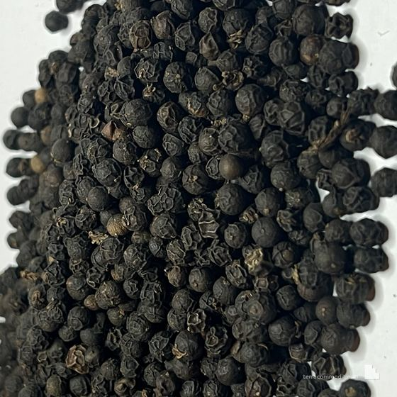
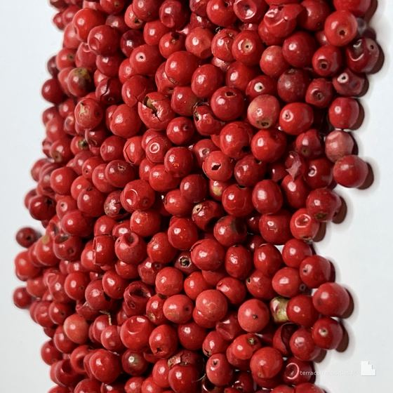
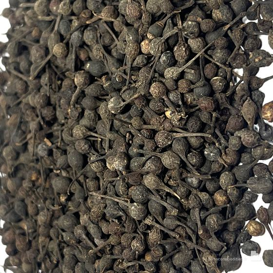
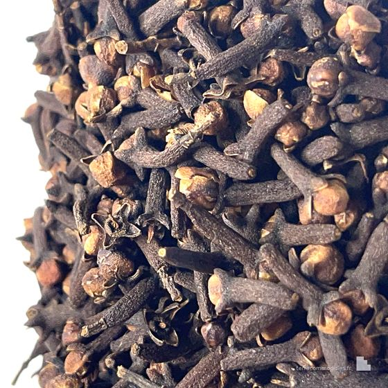

Division 01 · Agriculture
Vanille
& épices
Madagascar produit certaines des meilleures épices au monde — et beaucoup d'offres qui n'aboutissent jamais. Nos équipes sont sur place : nous connaissons les exploitations, nous voyons les lots, nous savons qui peut réellement tenir un volume.
Notre approche
Une présence locale, un accès direct
L'agriculture est le premier pilier de Terra Commodities. Présents sur place à Madagascar et pilotés depuis Paris, nous travaillons avec un réseau de producteurs sélectionnés plutôt qu'avec un fournisseur unique.
Quand un acheteur arrive avec un besoin précis — produit, grade, volume, prix cible — nous mobilisons ce réseau et présentons plusieurs producteurs. C'est ensuite entre eux que le contrat se conclut, sur des bases que nous avons vérifiées.
Nos engagements
Ce qui nous distingue
Vérification qualité avant embarquement
Nos équipes sont présentes à Madagascar. Nous inspectons les lots et documentons leur qualité avant embarquement, puis transmettons ces constats aux deux parties. Cette vérification indépendante distingue notre intermédiation d'une simple mise en relation.
Sourcing multi-producteurs
Nous sélectionnons les producteurs que nous présentons dans une démarche durable, respectueuse des écosystèmes et des communautés productrices. Jamais un seul producteur par produit : toujours des alternatives vérifiées.
Documentation complète
Certificat d'origine, analyses de conformité, documentation phytosanitaire et douanière : nous réunissons le dossier et le transmettons aux deux parties. Sur demande, nous organisons une inspection par un organisme tiers indépendant avant chargement.
Une information fiable, en amont
Nous vérifions les capacités réelles du producteur avant toute présentation. Si une contrainte de volume ou de calendrier apparaît, nous vous en informons sans délai — avant que vous ne vous engagiez contractuellement.
Catalogue
Les produits que nous couvrons
Chaque référence correspond à une filière que nous connaissons et dont nous avons vérifié les producteurs.
D'autres références, grades et conditionnements sont disponibles sur demande.
Nos lots
Photographiés à réception




Nos origines
Madagascar, au cœur de notre modèle
Notre présence directe à Madagascar — régions de Toamasina, d'Antananarivo et archipel de Nosy Be — est ce qui nous distingue d'un courtier à distance. Nous connaissons les producteurs, nous visitons les exploitations, nous contrôlons les lots avant expédition.
Nos valeurs